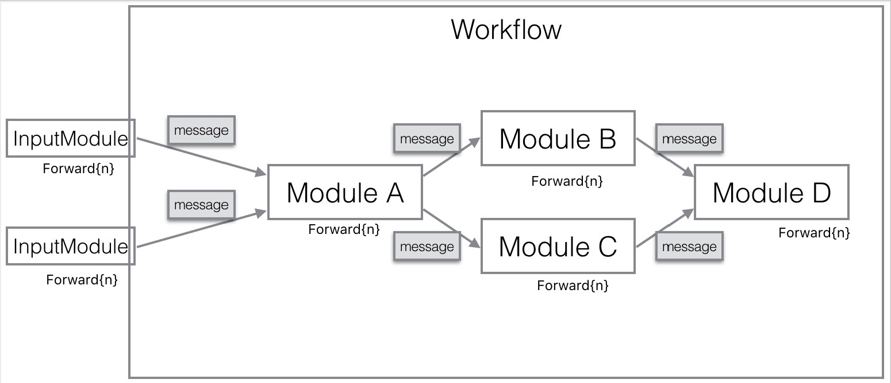
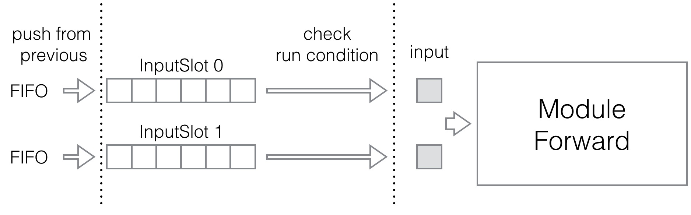
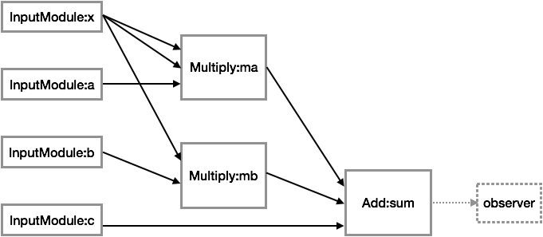
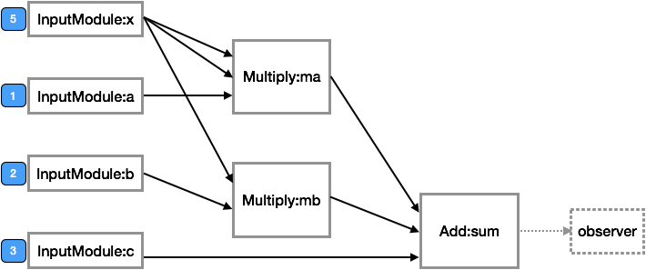
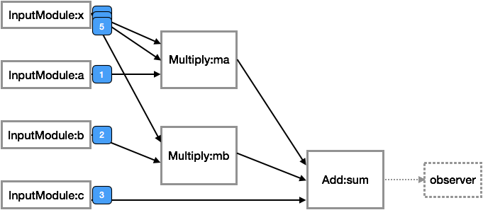
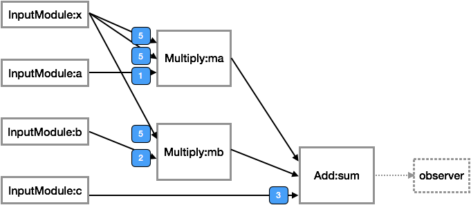
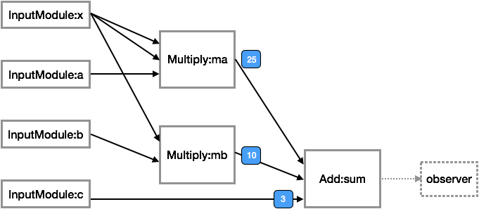
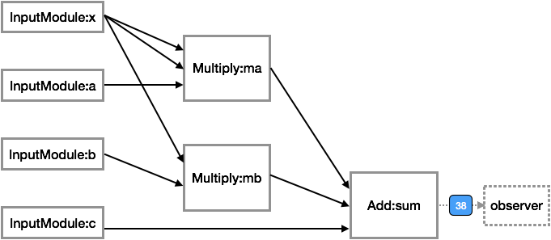

Getting Started with Hobot Framework {#hobotsdk}¶
[TOC]
Hobot Framework 提供了一个通过有向图的形式, 将基础代码功能模块组织成较复杂功能模块的机制。
基于Hobot Framework, 所有的基础的功能以 Module 的形式提供; 功能之间的数据交换以 Message 为单位。
一个 Module 由多个 Forward{n} 组成，其中 Forward{n} 又可以以一个或多个别的 Module::Forward{n} 产生的 Message 为输入, 可以输出自己的 Message。
这样, 基础功能的开发者可以将自己的基础功能封装成一个 包含多个 Forward 的 Module, 并说明自己的输入输出;
上层更复杂的功能开发者可以将这些 Module::Forward{n} 以有向图 Workflow 的形式组织起来, 形成更复杂的功能。

Build¶
你需要一个编译好的库, 和 hobot/api/ 下面的 .h 文件就可以开始开发。
编译使用 cmake。
生成文档，请用 doxygen doxygen.txt
CMake 脚本初始化¶
将CMakeLists.txt.sample, test/CMakeLists.txt.sample, example/CMakeLists.txt.sample 三个文件分别复制至同目录下的CMakeLists.txt。
比如linux下：
cp CMakeLists.txt.sample CMakeLists.txt
cp test/CMakeLists.txt.sample test/CMakeLists.txt
cp example/CMakeLists.txt.sample example/CMakeLists.txt
决定目标平台¶
目前支持四种平台：OS X, linux, android, windows.
配置平台信息的文件是build.properties.local文件。你可以：
cp build.properties.local.example build.properties.local
Build for Android¶
需要最新的Android NDK。NDK路径也在build.properties.local设置，根据你本机的路径来设置：
ANDROID_NDK /Users/witwolf/Develop/android-ndk-r10e
platform android
Build for Linux¶
需要gcc 4.9。
build.properties.local中设置：
platform linux
然后运行
mkdir build
cd build
cmake ..
make
Build for Mac¶
需要XCode。
build.properties.local中设置：
platform mac
然后运行
mkdir build
cd build
cmake ..
make
Build for Windows¶
需要安装 VS2015 以上版本。
build.properties.local中设置：
platform win
然后运行
mkdir build
cd build
cmake ..
cmake --build . --config Debug|Release
注意根据需要, 指定 --config Debug 或者 --config Release。
Develop¶
Hello World!¶
我们来完成一个最简单的功能: 加法计算。
class FloatMessage: public hobot::Message {
public:
float value_;
FloatMessage() { }
explicit FloatMessage(float value) : value_(value) { }
};
class Add: public hobot::Module {
private:
hobot::spMessage output_;
public:
explicit Add(std::string instance_name = "")
: hobot::Module(instance_name, "Add") { }
void Init(hobot::Engine *engine,
hobot::Workflow *workflow,
const hobot::MessageLists &input) override {
output_.reset(new FloatMessage(0));
std::cout << "Add::Init" << std::endl;
}
void Reset() override {
}
FORWARD_DECLARE(Add, 0) {
std::cout << "Add::Forward, input size:" << input.size() << std::endl;
float sum = 0;
static_cast<FloatMessage *>(output_.get())->value_ = 0;
for (int i = 0; i < input.size(); i++) {
hobot::spMessage in = (*input[i])[0];
sum += static_cast<FloatMessage *>(in.get())->value_;
}
std::cout << "Add::Forward, sum:" << sum << std::endl;
static_cast<FloatMessage *>(output_.get())->value_ = sum;
workflow->Return(this, 0, output_, context);
}
};
class Hello1Result: public hobot::RunObserver {
public:
void OnResult(hobot::Module *from,
int forward_index,
hobot::spMessage output) override {
std::cout << "result:"
<< (static_cast<FloatMessage *>(output.get()))->value_
<< std::endl;
}
};
int TestHello1() {
std::cout << "Hello, TestLoop!" << std::endl;
hobot::Engine *engine = hobot::Engine::NewInstance();
hobot::Workflow *workflow = engine->NewWorkflow();
hobot::InputModule *a = new hobot::InputModule("a");
hobot::InputModule *b = new hobot::InputModule("b");
hobot::Module *add_module = new Add();
workflow->From(a, 0)->To(add_module, 0, 0);
workflow->From(b, 0)->To(add_module, 1, 0);
Hello1Result *out = new Hello1Result();
workflow->Run({std::make_pair(add_module, 0)}, {
std::make_tuple(a, 0, hobot::spMessage(new FloatMessage(1))),
std::make_tuple(b, 0, hobot::spMessage(new FloatMessage(2)))
}, out);
return 0;
}
下面我们来仔细看看这个例子。
引入依赖¶
#include "hobot/api/hobot.h"
一般情况下, 无论你想开发一个基础Module, 还是想构造一个Workflow, 你需要依赖 hobot/api/hobot.h 来继续开发。
Module 开发者¶
Message¶
我们要实现的加法运算，无论输入还是输出的数据，都是浮点数。所以，我们首先得有一个消息类型FloatMessage：
class FloatMessage : public hobot::Message {
public:
float value_;
FloatMessage() {}
explicit FloatMessage(float value) : value_(value) {}
};
Module的开发者必须使用hobot::Message类型来做数据交换。如果不是使用别人已经开发好的Message，那么就得像现在一样，定义自己的Message类型。
Module¶
然后，我们需要实现我们的Add类：
class Add : public hobot::Module {
...
}
实现一个Module，你需要继承抽象类hobot::Module。其中最重要的是实现Forward{n}方法：
FORWARD_DECLARE(Add, 0) {
std::cout << "Add::Forward, input size:" << input.size() << std::endl;
float sum = 0;
static_cast<FloatMessage *>(output_.get())->value_ = 0;
for (int i = 0; i < input.size(); i++) {
hobot::spMessage in = (*input[i])[0];
sum += static_cast<FloatMessage *>(in.get())->value_;
}
std::cout << "Add::Forward, sum:" << sum << std::endl;
static_cast<FloatMessage *>(output_.get())->value_ = sum;
workflow->Return(this, 0, output_, context);
}
在Forward{n}方法里面，你需要实现这个Module想要实现的功能。比如在这里，Add::Forward0需要实现的功能是把它的所有输入加起来，输出结果。可以看到，Module的所有输入的数据都被放到input参数中，只有基类的类型信息hobot::Message，你在实现Forward{n}方法体中访问这些数据的时候，需要自己转换成需要的类型：
sum += static_cast<FloatMessage *>(in.get())->value_;
在完成你所需要的运算，需要返回结果的时候，需要调用Workflow提供给你的接口Return来通知Workflow，自己输出了一个Message：
workflow->Return(this, 0, output_, context);
至此，一个基本的Add功能就开发完成了。
Module的使用者, Workflow的开发者¶
下面，我们通过使用Add::Forward0来构建一个图，执行加法运算：
class Hello1Result: public hobot::RunObserver {
public:
void OnResult(hobot::Module *from,
int forward_index,
hobot::spMessage output) override {
std::cout << "result:"
<< (static_cast<FloatMessage *>(output.get()))->value_
<< std::endl;
}
};
int TestHello1() {
std::cout << "Hello, TestLoop!" << std::endl;
hobot::Engine *engine = hobot::Engine::NewInstance();
hobot::Workflow *workflow = engine->NewWorkflow();
hobot::InputModule *a = new hobot::InputModule("a");
hobot::InputModule *b = new hobot::InputModule("b");
hobot::Module *add_module = new Add();
workflow->From(a, 0)->To(add_module, 0, 0);
workflow->From(b, 0)->To(add_module, 1, 0);
Hello1Result *out = new Hello1Result();
workflow->Run({std::make_pair(add_module, 0)}, {
std::make_tuple(a, 0, hobot::spMessage(new FloatMessage(1))),
std::make_tuple(b, 0, hobot::spMessage(new FloatMessage(2)))
}, out);
return 0;
}
直观上, 上述代码构建了一个非常简单的Workflow, 其结构如下图:

初始化 workflow¶
首先，初始化一个Engine和一个Workflow：
hobot::Engine *engine = hobot::Engine::NewInstance();
hobot::Workflow *workflow = engine->NewWorkflow();
简单地说，一个Engine代表一个线程池和一个调度线程。也许现在这些对你还不重要，只需要记住：每一个Workflow都必须在一个Engine上来运行。所以，上述代码中创建的workflow会在engine上面执行。
组织 Graph in workflow¶
然后，我们开始组织我们的workflow中的计算流程：
hobot::InputModule *a = new hobot::InputModule("a");
hobot::InputModule *b = new hobot::InputModule("b");
hobot::Module *add_module = new Add();
workflow->From(a, 0)->To(add_module, 0, 0);
workflow->From(b, 0)->To(add_module, 1, 0);
这样，我们的workflow中有三个Module：输入a，输入b，加法计算add_module。a::Forward0连接到add_module::Forward0的0号输入；b::Forward0连接到add_module::Forward0的1号输入。
运行 workflow¶
workflow已经建好，下面开始跑了：
workflow->Run({std::make_pair(add_module, 0)}, {
std::make_tuple(a, 0, hobot::spMessage(new FloatMessage(1))),
std::make_tuple(b, 0, hobot::spMessage(new FloatMessage(2)))
}, out);
Run的第一个参数 {add_module::Forward0}，表示这次运行希望最终得到哪个Module::Forward{n}的结果；在这里，我们显然是希望得到加法计算后的结果；第二个参数是个Vector，表示这次运行的时候所需要的输入，也就是InputModule a::Forward0；b::Forward0 所代表得值。对了！out的类型是Hello1Result，这是一个用来收集运行结果的类：
class Hello1Result: public hobot::RunObserver {
public:
void OnResult(hobot::Module *from,
int forward_index,
hobot::spMessage output) override {
std::cout << "result:"
<< (static_cast<FloatMessage *>(output.get()))->value_
<< std::endl;
}
};
当add_module::Forward0有输出的时候，out的OnResult方法会被Engine回调回来，通知运行的结果。所以，如果你运行上面的例子，应该可以得到输出结果result:3。
至此，你已经完成了一个能做加法运算的Workflow。
Threading¶
在上一节的例子里面, Workflow中只有一个Module; 在实际场景下的Workflow通常会由更多的Module组成; 这些Module执行的任务会更复杂, 需要更多的计算资源。
你有可能希望在Workflow执行的过程中希望利用系统中的多个核来处理不同的Module::Forward{n}的工作, 这样可以让整个Workflow运行的更快。
想利用多线程, 你只需要:
int TestHello2(){
...
engine->ExecuteOnThread(module_a, 0, 0);
engine->ExecuteOnThread(module_b, 0, 1);
engine->ExecuteOnThread(module_c, 0, 2);
...
}
上面这段例子的作用是让module_a::Forward0运行在0号线程; 让module_b::Forward0运行在1号线程; 让module_c::Forward0运行在2号线程。
Engine::ExecuteOnThread提供了一个接口, 让你可以指定某个Module::Forward{n}在这个Engine的第几号线程上运行。
在不调用这个方法的时候, 默认所有线程都在0号线程上运行。
这些线程会被Engine启动, 并一直运行; 在没有Workflow运行的时候, 这些线程会被挂起, 并不会占用CPU资源。
更多关于线程的信息¶
每个Engine实例内部, 除了一个线程池来运行所有的Module::Forward{n}以外, 还有个调度线程;
用户在自己的线程上调用Workflow::Run会立即返回, 所有的输入会在调度线程中处理; 当执行完的时候, 调度线程会负责收集用户想要的输出并调用回调RunObserver::OnResult。
Module Input Control¶
InputSlot的概念¶
先回忆一下Hello World中的Module是怎么连接的:
workflow->From(a)->To(add_module, 0, 0);
workflow->From(b)->To(add_module, 1, 0);
再回忆一下Add的Forward0方法:
FORWARD_DECLARE(Add, 0) {
...
}
按照我们刚才的Workflow定义的话, 那么在这个Forward0执行的时候, a输入的值出现在input[0]中; b输入的值会出现在input[1]中。
我们把input[0]对应的module_a的 输入位置 称为 InputSlot 0 ; input[1]对应的module_a的 输入位置 称为 InputSlot 1。
可以看到, 一个Module::Forward{n}有多少个InputSlot是在Workflow中确定Module之间的连接关系的时候确定的。这样可以支持不定InputSlot数量的Module的开发。
但是, 很明显, Module::Forward{n}需要处理多少个InputSlot是由自己的Forward逻辑决定的, 如果Module在实现Forward的过程中只处理了前两个InputSlot, 那么即使你在Workflow构建的过程中给这个Module接入了3个InputSlot, 第三个也不会被处理。
InputSlot 与 Module 执行条件: Condition Expression¶
事实上, Module::Forward{n}的每个InputSlot都是一个FIFO队列。
默认情况下, 当Module::Forward{n}的所有的InputSlot都有了一个Message以后, InputSlot i中的第一个元素(最早进入的元素)会被取出来放入input[i]当中; 然后以input为参数, 调用Module::Forward。
但是, 如果你不想每个InputSlot处理一个Message, 而是希望更多的Message一起处理呢?
想象你做了个AverageModule::Forward0, 功能是把input[0]里面所有的FloatMessage求了一个平均数, 然后输出:
class AverageModule: public hobot::Module {
public:
explicit AverageModule(std::string instance_name)
: Module(
instance_name,
"Average") { }
void Init(hobot::Engine *engine,
hobot::Workflow *workflow,
const hobot::MessageLists &input) override { }
void Reset() override { }
FORWARD_DECLARE(AverageModule, 0) {
hobot::MessageList *in = input[0];
float sum = 0;
for (int i = 0; i < in->size(); i++) {
hobot::spMessage msg = in->at(i);
sum += (static_cast<FloatMessage *>(msg.get()))->value_;
}
if (in->size() > 0) {
sum /= in->size();
}
workflow->Return(this, 0, hobot::spMessage(new FloatMessage(sum)), context);
}
};
这样, 你在Workflow中使用这个AverageModule的时候, 希望根据需要, 有些情况下每收到2个Message就做一次平均然后输出; 有些情况下每收到4个Message就做一次平均然后输出。
Hobot Framework 支持你做这样的事情:
workflow->SetCondition(avg_module,
hobot::Expression::Require(0, 2), 0);
以上代码的功能是让avg_module::Forward0每当在InputSlot 0收到2个消息的时候, 就可以启动。
可以看到, 在workflow里面, 每个Module::Forward{n}都可以设置对应的 Condition ; 当满足Condition的时候, Forward{n} 得以执行。
关于InputSlot, Condition 和 Module::Forward 之间的关系, 可以见下图:

以下是一些Condition的例子:
InputSlot 0 有2个Message, 并且InputSlot 1 有3个Message:
workflow->SetCondition(avg_module, hobot::Expression::Require(0, 2)->And(hobot::Expression::Require(1,3)));
InputSlot 0 有1个Message, 或者InputSlot 1 有1个Message:
workflow->SetCondition(avg_module, hobot::Expression::Require(0, 1)->Or(hobot::Expression::Require(1,1)));
InputSlot 0 有1个Message; InputSlot 1 无论多少个Message都可以:
workflow->SetCondition(avg_module, hobot::Expression::Require(0, 1)->And(hobot::Expression::Require(1,hobot::ReqAll)));
这里, hobot::ReqAll 是个特殊的值; 表示这个InputSlot无论有多少Message都不妨碍执行Forward; 但只要执行Forward, 就取出这个InputSlot所有的Message放进input参数。
这样, 你可以更灵活地运用你的Module。
Module Output Control¶
在上一节, 我们知道了如何指定一个Module在Forward{n}的时候, 它的输入Message所必须满足的条件。但是有些时候, 你可能还会希望Forward{n}之前, 这个Module的输出也需要满足一定的条件。
例如, 如果你有一个Module: module_a, 他的每个输出的Message都会占据比较大的内存空间; 所以你可能会希望当module_a每次输出的Message都被处理完了以后, 再执行module_a的下一个Forward。
你可以这么做:
workflow->From(module_a, 0)->To(module_b, 0, 0)->Limit(1);
这里, 第三个参数1表示从module_a::Forward0的输出到module_b::Forward0的InputSlot 0之间的这个Link, 最多只能有1个待处理的Message。也就是说, 如果module_b的InputSlot 0累积了1个Message没被处理, 那么module_a的Forward就不会再次被调用。
这里, module_a::Forward0的输出Message可能会被多个不同的Module::Forward使用; 这种情况下, 需要module_a::Forward0所有的后续的Link的个数约束都满足后, 才会执行module_a的Forward0。
Rescheduling¶
如上述两节所述, 在正常情况下, 当一个Module的输入InputSlot、输出Link都满足条件后, 就会执行Forward, 消耗掉InputSlot里面的Message; 当条件再次满足的时候再次执行, 周而复始。
Module::Forward{n} 本身并没有参与决定自己什么时候再次被执行。
但是, 有的时候, 或许你想自己决定将来自己会再次执行, 而不依赖输入条件的触发。
例如, 如果你有一个Forward: ModuleA::Forward0, 他首次执行后, 希望每隔一秒自动执行一次。
你可以这么做:
FORWARD_DECLARE(Tick, 0) {
...
workflow->Reschedule(this, 0, input, context, 1000);
}
Hobot Framework的Workflow提供了Reschedule方法, 最后一个参数1000为自己再次Forward0的毫秒数。
Architecture¶
如果希望结合代码了解Hobot Framework的实现，请先阅读以上使用文档，再继续阅读本节。
事件驱动的运行模式¶
所有的设计，都是为了功能、也就是提供给使用者的接口服务的。所以，先来回顾一下Hobot Framework所提供的功能。
从Module作者的角度来看，在实现一个Module的时候，需要关心的是：
Forward{n}方法的功能实现输入的消息的定义
输出的消息的定义
只要输入的消息准备好了，就执行Forward{n}的逻辑，而可以不关心什么时候，被谁，在哪个线程调用。
从Workflow作者的角度来看，在写一个Workflow，以及执行Workflow的时候，需要关心的是：
各个
Module之间的逻辑关系，以构建图输入数据
Message的时机，以开始Workflow的计算
整个Workflow在构建好以后，其运行完全是由输入的数据Message来驱动运行的。收集返回结果的接口也是异步的。Workflow的作者，也可以不用关心Workflow中的哪个Module在什么时候运行，只要能及时从RunObserver中获取到正确的结果。
可以看出，Hobot Framework提供的功能接口是异步回调的方式。这决定了其内部实现也是异步事件驱动的方式。
线程：Event Loop 和 Event Queue¶
对于所有事件驱动的系统，最常见的实现方式就是消息队列和事件循环： 一个单独的thread，对应一个event queue；这个thread是event queue的消费者，thread的主要逻辑是在一个循环中，不断取出event，然后dispatch给感兴趣的程序模块。
例如，一个基于select的非阻塞网络处理线程，可以写成下面这样子：
for(;;) {
// 接收事件
int rc = select(max(from,to)+1, &readfds, &writefds, NULL, NULL);
// 分发处理事件
if(FD_ISSET(from, &readfds)){
...
}
if(FD_ISSET(to, &writefds)){
...
}
}
其中，event queue可以看做是隐含在select接口之下，在上述代码中并不可见。
又例如，一个GUI界面程序需要响应鼠标、键盘的输入来改变其显示，程序的事件处理线程可以写成下面这样子：
for(;;){
// 接收事件
event = event_queue->poll_next();
if(event != NULL){
// 分发处理事件
get_handler_for(event)->handle(event);
}
}
在上面的例子中，有几个值得注意的地方：
select()和poll_next()调用，在没有事件发生的时候，会一直阻塞，使得线程进入sleep状态，直到有事件发生为止。这样避免了在没有事件发生的时候，for(;;){}循环导致占用CPU的问题。Event queue中event的生产者，可能运行在本线程上，也可能运行在别的线程上。这就要求event queue 这个数据结构支持高效的多线程访问。
上述事件循环本身可以是和具体的业务无关的，只负责将event dispatch给相应的模块（在上述例子中，就是调用响应handler的handle方法），具体的业务代码由handler自己实现。
所以，一个通用的事件处理的系统需要的事件处理线程，应该包括一个上述的事件分发循环，以及对应的满足上述要求的事件队列 event queue。
在Hobot Framework中，这个事件处理线程，连同其event queue，被封装成一个Thread类，其接口定义在 include/hobot/thread.h中。
Thread的具体实现的代码在src/thread/，来自于webrtc和chromium项目。
Hobot Framework中的Event处理¶
我们来看一个Workflow的例子（完整例子来自于example/example_calculate.cpp）：
int ComplexCalculate(int argc, char **argv) {
hobot::Engine *engine = hobot::Engine::NewInstance();
hobot::Workflow *workflow = engine->NewWorkflow();
// workflow to compute a*x^2 + b*x + c
hobot::InputModule *a = new hobot::InputModule("a");
hobot::InputModule *b = new hobot::InputModule("b");
hobot::InputModule *c = new hobot::InputModule("c");
hobot::InputModule *x = new hobot::InputModule("x");
Add *add = new Add("sum");
Multiply *ma = new Multiply("ma");
Multiply *mb = new Multiply("mb");
// workflow->From(a)->To(ma, 0); // error message: duplicate 0
workflow->From(a)->To(ma, 0);
workflow->From(x)->To(ma, 1);
workflow->From(x)->To(ma, 2);
workflow->From(b)->To(mb, 0);
workflow->From(x)->To(mb, 1);
// workflow->From(ma)->To(add, 4); // error message: missing 3
workflow->From(ma)->To(add, 0);
workflow->From(mb)->To(add, 1);
workflow->From(c)->To(add, 2);
engine->ExecuteOnThread(ma, 0, 0);
engine->ExecuteOnThread(mb, 0, 1);
engine->ExecuteOnThread(add, 0, 0);
ComplexCalculateObserver *observer = new ComplexCalculateObserver();
hobot::spMessage a_msg(new FloatMessage(1));
hobot::spMessage b_msg(new FloatMessage(2));
hobot::spMessage c_msg(new FloatMessage(3));
hobot::spMessage x_msg(new FloatMessage(5));
hobot::spRunContext run_task =
workflow->Run({{std::make_pair(add, 0)}}, observer);
run_task->Init();
workflow->Feed(run_task, a, 0, a_msg);
workflow->Feed(run_task, b, 0, b_msg);
workflow->Feed(run_task, c, 0, c_msg);
workflow->Feed(run_task, x, 0, x_msg);
...
return 0;
}
上述代码中，首先是Workflow的结构：构建了一个计算a*x^2 + b*x + c的工作流，其结构如下：

其次，指明了不同Module所运行的线程，其中ma add在0号线程，mb在1号线程。
再其次，朝Workflow中feed了一些输入Message，开始执行计算。
下面，将按照时间顺序，分析在Workflow执行过程中的事件处理流程设计。
MSG_MODULE_FEED¶
当如下代码运行的时候：
workflow->Feed(run_task, a, 0, a_msg);
workflow->Feed(run_task, b, 0, b_msg);
workflow->Feed(run_task, c, 0, c_msg);
workflow->Feed(run_task, x, 0, x_msg);
4个Message分别被feed给a, b, c, d 4个Module：
此时，workflow 产生了一个MSG_MODULE_FEED事件。这个事件实际的效果是，将Message放在了对应的Module的InputSlot中：

如上图所示，a, b, c, d 4个Module都有输入的Message待处理。而每当图中任何一个Module的输入输出消息队列的情况发生变化的时候，都会触发MSG_TRY_EXECUTE_MODULE 事件。
MSG_TRY_EXECUTE_MODULE 和 Thread::Post¶
这个事件发生以后，Workflow会尝试检查相应的Module是否满足运行的条件（比如，是否满足指定的输入条件表达式，或者指定的输出Limit），如果满足的话，会执行这个Module的Forward{n}方法。
相应的实现代码请参考DefaultWorkflow::TryExecuteModule。
这个消息会在Module被用户指定的对应的工作线程上被处理，这样Forward{n}就会在指定的线程上运行了。
向一个线程的消息队列加入一个消息，可以用Thread::Post方法。本节中涉及到的所有消息，都是用Thread::Post在指定的线程上做处理。
Return() 和 MSG_MODULE_RETURN¶
此时，a, b, c, d 4个Module 都是 InputModule，InputModule的运行条件是只要有消息就马上处理。所以InputModule的Forward{n}一定会被调用，其实现如下：
FORWARD_DEFINE(InputModule, 0) {
// directly return input message
workflow->Return(this, 0, (*input[0])[0], context);
}
可以看到，InputModule直接调用了Workflow提供的Return方法。如前文所述，这个方法会通知Workflow：本Module输出了一个Message。
Workflow::Return被调用以后，如果这个Module是observer需要输出的Module，那么相应的Message会通知到observer。
然后，会产生MSG_MODULE_RETURN事件，表明Message进入了Module的输出端：

可以看到x 产生了3个MSG_MODULE_RETURN，分别对应不同的下游的Module，因为MSG_MODULE_RETURN需要在下游的Module对应的线程上处理。
请注意，上图所显示的是a, b, c, d 4个Module 都同时Return了之后的状态。实际执行的时候由于时序和线程调度也许状态变迁和上图不一样，但在这里不影响我们的分析过程。
MSG_MODULE_RETURN 的处理方式是，首先，按照Workflow的连接关系，将Return的Message放到连接的目标Module的相应输入端：

然后，会尝试检查以及运行目标Module，也就是调用 DefaultWorkflow::TryExecuteModule。
可以看出，上图中ma mb均满足了执行条件，此时会执行ma mb的Forward{n}方法。这两个方法的实现如下：
FORWARD_DECLARE(Multiply, 0) {
float sum = 1;
for (int i = 0; i < input.size(); i++) {
hobot::spMessage in = (*input[i])[0];
sum *= static_cast<FloatMessage *>(in.get())->value_;
}
// std::cout << "Multiple::Forward, sum:" << sum << std::endl;
workflow->Return(this, 0, hobot::spMessage(new FloatMessage(sum)), context);
}
可以看出，乘法计算结束后，也会把结果通过Workflow::Return通知给Workflow，从而继续产生新的MSG_MODULE_RETURN：

以此类推，最终完成add计算，输出给observer:

以上就是基本的事件驱动执行的过程。